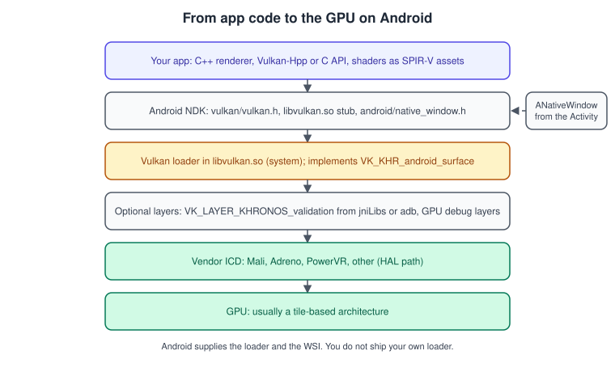
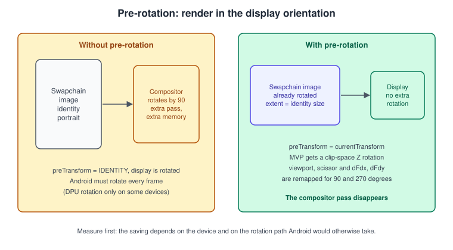
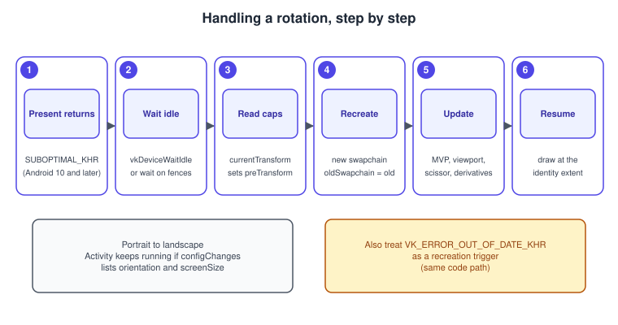
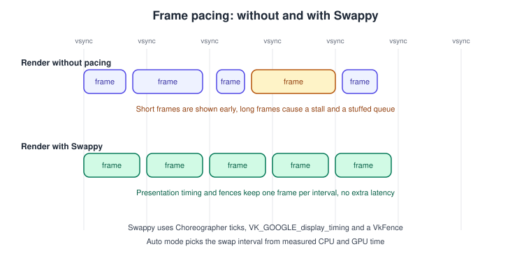

Vulkan on Android
|
This content was generated with the assistance of AI and should be verified against the official documentation before being relied on in production. |
Android is the largest Vulkan platform by device count, and it is also the one where the platform decides things that a desktop application decides for itself: the Vulkan loader is part of the operating system, the window and the swapchain buffers belong to the compositor, and the display can rotate underneath a running application. This page covers what changes when the Vulkan code that the rest of this section describes runs on a phone or a tablet: which version you can rely on, how the surface is created, how to handle rotation without a compositor pass, how to pace frames, how to turn validation on, and how the architecture of a mobile GPU shapes the renderer.
The facts were checked in November 2026. The versions documented are Vulkan 1.4 as the current core version, with Vulkan 1.1 as the floor for 64-bit devices that launched with Android 10 and Vulkan 1.3 or 1.4 where the device launched with Android 13 or Android 16. Android Studio with a recent NDK and CMake is assumed, and the code is C++20. The running example of this section, the Vulkan Bookshelf, is written for desktop first (C++20, Vulkan-Hpp RAII, VMA, GLFW or SDL3, Slang shaders with GLSL and HLSL as alternatives). This page shows the changes needed to run the same renderer on Android: a native activity instead of GLFW, a surface from the activity’s window, shaders compiled ahead of time, and pre-rotation. The Bookshelf renderer itself is built in Bookshelf, Part 1: From a Triangle to a Textured Book and Bookshelf, Part 2: Scene and Game.
The repository’s Android section already introduces the NDK and the relation between OpenGL ES, ANGLE and Vulkan in
Android graphics: Canvas, DrawScope, OpenGL ES. Read it for the Kotlin side (Activity,
SurfaceView, GLSurfaceView); this page goes into the Vulkan side in depth and does not repeat it. Where a concept is general it is
explained once in the Vulkan pages, for example
Window System Integration and the Swapchain,
Instance, Loader and Layers and
Versions, Profiles and Extensions.
What Android gives you

On Android the Vulkan loader is libvulkan.so, a system library. You link against the stub that the NDK provides and the real library is
used at run time. You do not ship a loader, and there is no ICD manifest to install: the platform locates the vendor driver through its
hardware abstraction layer at a fixed path. The loader implements the window system integration extensions, including
VK_KHR_android_surface; the platform owns the VkSurfaceKHR, the VkSwapchainKHR and all interaction with the ANativeWindow, so a driver
does not see those objects directly.
Which Vulkan version can you rely on
| Android release | What the platform requires | Practical meaning |
|---|---|---|
Android 7 (API 24) |
Vulkan 1.0 can exist on a device, but the device is not required to have a driver. |
Check at run time. Vulkan is available as an API from API level 24, though not every device has a driver. |
Android 10 (API 29) |
64-bit devices that launched with Android 10 (API 29) or later must include a Vulkan 1.1 driver. |
Vulkan 1.1 is the safe floor for modern devices. Around 85 percent of active Android devices support Vulkan at all. |
Android 13 |
Devices launching with Android 13 or later must support Vulkan 1.3. |
Dynamic rendering and synchronization2 are core on those devices. Devices updated from an older release keep their old driver version. |
Android 16 |
Devices launching with Android 16 or later must support Vulkan 1.4. |
The version is advertised through |
The version a device launched with is a floor for that device and not a statement about every phone in the field. A phone that shipped
with Android 12 and was updated to Android 15 still reports the Vulkan version of its original driver, unless the vendor also updated the
driver. The instance version tells you what the loader supports and the physical-device version tells you what the driver supports, so the
two must be checked separately. The Vulkan Bookshelf requires Vulkan 1.3 on desktop; on Android it takes the same code path when
VkPhysicalDeviceProperties::apiVersion is at least 1.3 and otherwise falls back to the extension forms (VK_KHR_dynamic_rendering,
VK_KHR_synchronization2) that the Vulkan 1.1 and 1.2 drivers of that generation often expose.
Android Vulkan profiles
A profile names a set of features and limits so that one query answers "can this device run my renderer". Android publishes its own profiles through the Khronos Vulkan Profiles repository. They were first called the Android Baseline profiles and are now called the Android Vulkan profiles; the file names of the older ones still use the word baseline.
| Profile | Adds | Device coverage (October 2025 figures) |
|---|---|---|
Android Vulkan Profile 2021 (Android Baseline 2021, |
ASTC and ETC compressed textures, |
About 95.5 percent of active devices that support Vulkan |
Android Vulkan Profile 2022 (Android Baseline 2022) |
Full Vulkan 1.1, |
About 86.5 percent |
Android Vulkan Profile 2025 |
|
About 80.1 percent |
Any device running Android 14 or later that supports Vulkan must meet the 2021 profile, and the platform encourages the 2022 profile. Using a profile means you design the renderer against one agreed feature set instead of testing every combination. Profiles are covered in general in Versions, Profiles and Extensions; the support check is one call with the Vulkan Profiles library:
#include <vulkan/vulkan.h>
#include <vulkan/vulkan_profiles.hpp> // from the Vulkan Profiles library, shipped in the SDK
bool deviceMeetsProfile(VkInstance instance, VkPhysicalDevice device)
{
// The profile name comes from the profile's JSON file in the Khronos Vulkan-Profiles repository.
VpProfileProperties profile{};
std::strncpy(profile.profileName, VP_ANDROID_vulkan_profile_2025_NAME, sizeof(profile.profileName) - 1);
profile.specVersion = VP_ANDROID_vulkan_profile_2025_SPEC_VERSION;
VkBool32 supported = VK_FALSE;
if (vpGetPhysicalDeviceProfileSupport(instance, device, &profile, &supported) != VK_SUCCESS) {
return false;
}
return supported == VK_TRUE;
}The macro names above come from the header that the Vulkan Profiles tooling generates from the profile’s JSON file, so use the names that your generated header contains. Design the renderer for a profile you can test on real hardware and treat the percentages as a way to decide which profile to target, not as a promise for your user base.
Project setup
Activity, NDK and build
A Vulkan renderer on Android is native code loaded by a Java or Kotlin activity. Two activity classes are in common use. NativeActivity
needs no Java code at all and is enough for a first triangle. GameActivity from the Android Game Development Kit is a Java activity that
forwards lifecycle, input and the window to native code through the android_native_app_glue interface, and it is the better choice for a
game because it works with the normal Android view system and with soft keyboards. Either way the native side receives an ANativeWindow,
and that is what a Vulkan surface is created from.
The Gradle module builds the native code with CMake. The NDK supplies the Vulkan headers and the vulkan stub library, so the CMake file
needs no find_package(Vulkan) call:
cmake_minimum_required(VERSION 3.22)
project(bookshelf LANGUAGES CXX)
set(CMAKE_CXX_STANDARD 20)
set(CMAKE_CXX_STANDARD_REQUIRED ON)
add_library(bookshelf SHARED
src/main/cpp/android_main.cpp
src/main/cpp/renderer.cpp)
# The NDK provides these: vulkan (stub of the system loader), android, log.
target_link_libraries(bookshelf PRIVATE vulkan android log)
# Use the C++ bindings without their dispatcher, and without prototypes if you load functions yourself.
target_compile_definitions(bookshelf PRIVATE
VK_USE_PLATFORM_ANDROID_KHR=1
VULKAN_HPP_DISPATCH_LOADER_DYNAMIC=0)VK_USE_PLATFORM_ANDROID_KHR makes vulkan_core.h include the platform header that declares vkCreateAndroidSurfaceKHR. If you use a
function loader such as volk or the Vulkan-Hpp dynamic dispatcher (see
Vulkan-Hpp, RAII and C++ Bindings), initialise it from vkGetInstanceProcAddr
obtained through dlopen("libvulkan.so"). Linking the stub is simpler and is what the example above does. For the C++ language side of the build,
see C++ Build and Tooling and
Memory Management and Smart Pointers.
Shaders on Android
Shaders reach the device as SPIR-V. There is no compiler on the device, so compile them while you build:
| Tool | Command | Notes |
|---|---|---|
|
|
The NDK carries a copy of |
|
|
The Bookshelf’s shading language. The output is ordinary SPIR-V. Pick the SPIR-V version to match the lowest Vulkan version you support. |
|
|
Needs |
Package the .spv files as APK assets and read them with AAssetManager_open and AAsset_read. Keep SPIR-V 1.0 to 1.3 for
Vulkan 1.1 devices, and use features that need newer SPIR-V only after checking the device. The shading languages page,
Shaders, SPIR-V and Shading Languages, explains the flags in more
detail.
Source: Vulkan Guide: HLSL in Vulkan
Creating the instance and the surface
The Android WSI extensions are VK_KHR_surface and VK_KHR_android_surface. Both are instance extensions. A renderer that uses
validation also enables VK_EXT_debug_utils, covered in Validation and Debug Utils.
The device extension VK_KHR_swapchain is required to present.
#include <vulkan/vulkan_raii.hpp>
#include <android/native_window.h>
#include <android_native_app_glue.h>
#include <vector>
#include <cstring>
struct AndroidVulkan {
vk::raii::Context context;
vk::raii::Instance instance{nullptr};
vk::raii::SurfaceKHR surface{nullptr};
};
// Returns true if every requested name is present in the available list.
static bool hasAll(const std::vector<const char*>& wanted, const std::vector<vk::ExtensionProperties>& have)
{
for (const char* name : wanted) {
bool found = false;
for (const auto& e : have) {
if (std::strcmp(e.extensionName, name) == 0) { found = true; break; }
}
if (!found) return false;
}
return true;
}
void createInstanceAndSurface(AndroidVulkan& vk, ANativeWindow* window, bool enableValidation)
{
std::vector<const char*> extensions = {
VK_KHR_SURFACE_EXTENSION_NAME,
VK_KHR_ANDROID_SURFACE_EXTENSION_NAME,
};
std::vector<const char*> layers;
if (enableValidation) {
extensions.push_back(VK_EXT_DEBUG_UTILS_EXTENSION_NAME);
layers.push_back("VK_LAYER_KHRONOS_validation");
}
auto available = vk.context.enumerateInstanceExtensionProperties();
if (!hasAll(extensions, available)) {
throw std::runtime_error("The device Vulkan loader lacks a required instance extension");
}
vk::ApplicationInfo app{"Vulkan Bookshelf", VK_MAKE_API_VERSION(0, 1, 0, 0),
"bookshelf-engine", VK_MAKE_API_VERSION(0, 1, 0, 0),
VK_API_VERSION_1_1}; // ask for the lowest version you support
vk::InstanceCreateInfo info{{}, &app, layers, extensions};
vk.instance = vk::raii::Instance(vk.context, info);
vk::AndroidSurfaceCreateInfoKHR surfaceInfo{{}, window};
vk.surface = vk::raii::SurfaceKHR(vk.instance, surfaceInfo);
}The instance’s apiVersion field is the highest version the application is written for. Asking for 1.1 does not stop you from using a
newer feature later: the application then checks the physical device’s apiVersion and enables the feature that way. The surface is owned by
the Android window. When the activity is paused the window can be destroyed, so the surface and the swapchain must be destroyed on
APP_CMD_TERM_WINDOW and recreated on APP_CMD_INIT_WINDOW. The instance and the device can stay alive.
// A command callback of android_native_app_glue (or the equivalent GameActivity callback).
static void onAppCmd(android_app* app, int32_t cmd)
{
auto* renderer = static_cast<Renderer*>(app->userData);
switch (cmd) {
case APP_CMD_INIT_WINDOW:
if (app->window != nullptr) {
renderer->createSurfaceAndSwapchain(app->window); // the surface exists only while a window does
}
break;
case APP_CMD_TERM_WINDOW:
renderer->device().waitIdle();
renderer->destroySwapchainAndSurface(); // frees images that belong to the window
break;
case APP_CMD_PAUSE:
renderer->setRendering(false); // stop recording while the app is in the background
break;
case APP_CMD_RESUME:
renderer->setRendering(true);
break;
default:
break;
}
}A common mistake is to create the swapchain once at start-up and to keep it. The window is destroyed when the user presses Home, when the
screen locks, when an app switches to split screen and sometimes when the display configuration changes. A renderer that holds a destroyed
ANativeWindow crashes in the driver, usually with no useful message.
Pre-rotation
An Android phone has a natural orientation, and the display can be turned in 90 degree steps. The images that an application presents are placed on screen by the platform. If the swapchain image has the natural orientation but the display is rotated, something has to rotate the image. There are three possibilities, and the application cannot see which one is used:
-
the display processing unit rotates it while scanning out, which is free but exists only on some devices
-
the compositor rotates it in an extra pass, which costs time and memory bandwidth every frame
-
the application renders already rotated, so nothing needs rotating
The Android Vulkan guidance recommends the third one, called pre-rotation, because the application cannot know whether the first is available. Google measured a Pixel 4 XL where the compositor’s rotation preempted application work with frame time hits of 1 to 3 ms and extra GPU memory pressure, and where handling rotation in the application nearly eliminated that preemption and lowered the GPU frequency by 40 percent. The effect varies by device, so measure on yours.

The two fields that matter
-
vkGetPhysicalDeviceSurfaceCapabilitiesKHRreturnscurrentExtentandcurrentTransform. The transform says how the display is rotated relative to the natural orientation, as one ofVK_SURFACE_TRANSFORM_IDENTITY_BIT_KHR,VK_SURFACE_TRANSFORM_ROTATE_90_BIT_KHR,VK_SURFACE_TRANSFORM_ROTATE_180_BIT_KHRorVK_SURFACE_TRANSFORM_ROTATE_270_BIT_KHR. -
VkSwapchainCreateInfoKHR::preTransformtells the presentation engine which transform the application has already applied. When it equalscurrentTransform, Android skips its own rotation.
The extent of the swapchain stays the identity size, which is the size of the display in its natural orientation. When the display is turned
by 90 or 270 degrees, currentExtent has its width and height swapped, so you swap them back to get the identity size.
struct DisplayInfo {
vk::Extent2D identityExtent{}; // size in the natural orientation, used for the swapchain
vk::SurfaceTransformFlagBitsKHR preTransform = vk::SurfaceTransformFlagBitsKHR::eIdentity;
};
DisplayInfo queryDisplay(const vk::raii::PhysicalDevice& gpu, const vk::raii::SurfaceKHR& surface)
{
vk::SurfaceCapabilitiesKHR caps = gpu.getSurfaceCapabilitiesKHR(*surface);
DisplayInfo info;
info.preTransform = caps.currentTransform;
info.identityExtent = caps.currentExtent;
const bool rotated = (caps.currentTransform & vk::SurfaceTransformFlagBitsKHR::eRotate90) ||
(caps.currentTransform & vk::SurfaceTransformFlagBitsKHR::eRotate270);
if (rotated) {
std::swap(info.identityExtent.width, info.identityExtent.height);
}
return info;
}
vk::raii::SwapchainKHR createSwapchain(const vk::raii::Device& device, const vk::raii::SurfaceKHR& surface,
const DisplayInfo& display, uint32_t imageCount, vk::Format format,
vk::ColorSpaceKHR colorSpace, vk::SwapchainKHR oldSwapchain)
{
vk::SwapchainCreateInfoKHR info{};
info.surface = *surface;
info.minImageCount = imageCount;
info.imageFormat = format;
info.imageColorSpace = colorSpace;
info.imageExtent = display.identityExtent; // not currentExtent
info.imageArrayLayers = 1;
info.imageUsage = vk::ImageUsageFlagBits::eColorAttachment;
info.imageSharingMode = vk::SharingMode::eExclusive;
info.preTransform = display.preTransform; // must equal currentTransform to skip the compositor pass
info.compositeAlpha = vk::CompositeAlphaFlagBitsKHR::eInherit;
info.presentMode = vk::PresentModeKHR::eFifo;
info.clipped = VK_TRUE;
info.oldSwapchain = oldSwapchain;
return vk::raii::SwapchainKHR(device, info);
}Source: Vulkan pre-rotation on Android
compositeAlpha is eInherit here for brevity; query supportedCompositeAlpha and pick a mode the surface supports (opaque is the usual choice for a game) in production code. FIFO is the one present mode that every implementation supports, and
the present modes are explained in
Window System Integration and the Swapchain.
Rotating what you draw
With the swapchain in the identity orientation and the display rotated, the picture is rotated by the application. The least intrusive way is a rotation around the Z axis applied to the clip-space position, after the projection, so that the shaders stay the same:
#include <glm/glm.hpp>
#include <glm/gtc/matrix_transform.hpp>
// Returns the matrix that rotates clip space to match the display. Multiply on the left of the MVP matrix.
glm::mat4 preRotationMatrix(vk::SurfaceTransformFlagBitsKHR transform)
{
const glm::vec3 zAxis(0.0f, 0.0f, 1.0f);
glm::mat4 m(1.0f);
switch (transform) {
case vk::SurfaceTransformFlagBitsKHR::eRotate90:
m = glm::rotate(m, glm::radians(90.0f), zAxis);
break;
case vk::SurfaceTransformFlagBitsKHR::eRotate180:
m = glm::rotate(m, glm::radians(180.0f), zAxis);
break;
case vk::SurfaceTransformFlagBitsKHR::eRotate270:
m = glm::rotate(m, glm::radians(270.0f), zAxis);
break;
default:
break; // identity
}
return m;
}
// Per frame: the camera uses the aspect ratio of the DISPLAY (rotated), not of the swapchain image.
glm::mat4 buildMvp(const glm::mat4& proj, const glm::mat4& view, const glm::mat4& model,
vk::SurfaceTransformFlagBitsKHR transform)
{
return preRotationMatrix(transform) * proj * view * model;
}Source: Vulkan pre-rotation on Android
Three details go with the matrix. The first is the aspect ratio: the swapchain is identity-sized, so a landscape display that is rotated 90 degrees from a portrait natural orientation needs a projection built from the displayed width and height, not the swapchain’s. The second is that the viewport and the scissor must be rotated too if they are not the full surface. Create the pipeline with dynamic viewport and scissor state and compute the rectangle when recording:
vk::Rect2D rotateRect(vk::Rect2D r, uint32_t bufferWidth, uint32_t bufferHeight,
vk::SurfaceTransformFlagBitsKHR transform)
{
using T = vk::SurfaceTransformFlagBitsKHR;
const int x = r.offset.x, y = r.offset.y;
const uint32_t w = r.extent.width, h = r.extent.height;
switch (transform) {
case T::eRotate90:
return {{int32_t(bufferWidth) - int32_t(h) - y, x}, {h, w}};
case T::eRotate180:
return {{int32_t(bufferWidth) - int32_t(w) - x, int32_t(bufferHeight) - int32_t(h) - y}, {w, h}};
case T::eRotate270:
return {{y, int32_t(bufferHeight) - int32_t(w) - x}, {h, w}};
default:
return r;
}
}
void recordViewportAndScissor(vk::raii::CommandBuffer& cmd, vk::Rect2D area, const DisplayInfo& display)
{
const vk::Rect2D r = rotateRect(area, display.identityExtent.width, display.identityExtent.height,
display.preTransform);
cmd.setViewport(0, vk::Viewport{float(r.offset.x), float(r.offset.y),
float(r.extent.width), float(r.extent.height), 0.0f, 1.0f});
cmd.setScissor(0, r);
}Source: Vulkan pre-rotation on Android
The third detail is the derivative functions. A fragment shader that calls dFdx or dFdy gets derivatives in the rotated pixel space, so
for a 90 degree transform dFdx of the unrotated picture is dFdy of the rotated one, and for 270 degrees dFdx becomes the negative of
dFdy. Pass the transform to the fragment shader, for example as a push constant, and swap the derivatives there. Shaders that use
derivatives for normal mapping or for mip level computation (through texture sampling, which is automatic and needs no change) differ in what
they need: sampling is correct without any change, while manual use of dFdx and dFdy needs the remap.
Handling an orientation change

On Android 10 and later, vkQueuePresentKHR returns VK_SUBOPTIMAL_KHR when the display orientation no longer matches the swapchain’s
preTransform. Earlier versions do not report it, so those need either polling currentTransform every few frames, which costs about a third of
a millisecond at most on the devices Google tested, or a callback on window resize, which fires only for 90 degree changes and misses a flip
between landscape and reverse landscape. A renderer that supports old devices polls; one that targets Android 10 and later can use the
return code.
// Returns true if the swapchain has to be recreated before the next frame.
bool presentFrame(vk::raii::Queue& queue, const vk::raii::SwapchainKHR& swapchain,
uint32_t imageIndex, vk::Semaphore waitSemaphore)
{
vk::PresentInfoKHR present{waitSemaphore, *swapchain, imageIndex};
vk::Result result = queue.presentKHR(present); // vk::raii throws on errors; see below for the exception form
return result == vk::Result::eSuboptimalKHR;
}
void drawFrame(Renderer& r)
{
bool recreate = r.needsRecreate(); // set by window resize or by polling
try {
recreate |= r.recordAndSubmitAndPresent(); // returns true when present said suboptimal
} catch (const vk::OutOfDateKHRError&) {
recreate = true; // also a recreation trigger
}
if (recreate) {
r.device().waitIdle(); // or wait on every frame fence instead
r.recreateSwapchain(); // re-reads currentTransform and sets preTransform
r.updateRotationDependentData(); // projection aspect, viewport, scissor, rotation matrix
}
}Source: Vulkan pre-rotation on Android
When the swapchain is recreated, pass the old swapchain in oldSwapchain so the driver can reuse resources, and destroy the old one after the
new one exists. Attachments that are not the swapchain images, such as the depth buffer, keep the identity size and do not need to be
recreated. If the activity declares android:configChanges="orientation|screenSize" in the manifest the activity is not recreated on
rotation; without it, the activity is destroyed and recreated and the window comes back through APP_CMD_INIT_WINDOW. If the manifest locks
the orientation, the swapchain is created once at start-up and resume.
Common mistakes
-
Setting
preTransformto identity while the display is rotated. The picture is correct, but Android has to rotate it every frame. -
Setting
preTransformto the current transform and not rotating the matrix. The picture appears sideways. -
Using
currentExtentas the image size. After a 90 degree turn the swapchain would be created with swapped sides and the picture is stretched. -
Forgetting that
VK_SUBOPTIMAL_KHRis a success code. Throwing on it ends the program on the first rotation; treating it as a recreation signal is correct. -
Not testing on a device that rotates. An emulator that never reports a rotated transform hides every one of these mistakes.
Frame pacing with Swappy
A game that renders as fast as it can does not necessarily show smooth motion. Frames that finish early are presented early and the following
frame is delayed, so the time between displayed frames alternates; frames that take longer than the display interval build up a queue of
buffers, which adds a frame of latency. Android Frame Pacing, known as Swappy, is the library that fixes both for OpenGL ES and Vulkan. It
uses Choreographer ticks to align with the display’s vertical sync, presentation timestamps through VK_GOOGLE_display_timing so frames are not
presented earlier than intended, and a VkFence to inject waits so the display pipeline can catch up instead of buffering.

On devices with several refresh rates, Swappy picks the refresh rate closest to the measured frame duration; a 60 and 90 Hz panel can be driven at 90, 60, 45 or 30 frames per second. It has a pipeline mode, a non-pipeline mode and an automatic mode that measures CPU and GPU time and chooses the swap interval. The Vulkan use has a fixed order of calls:
#include <swappy/swappyVk.h>
// 1. Before vkCreateDevice: ask Swappy which device extensions it needs and enable them.
std::vector<char*> swappyExtensions;
{
uint32_t availableCount = 0;
vkEnumerateDeviceExtensionProperties(physicalDevice, nullptr, &availableCount, nullptr);
std::vector<VkExtensionProperties> available(availableCount);
vkEnumerateDeviceExtensionProperties(physicalDevice, nullptr, &availableCount, available.data());
uint32_t requiredCount = 0;
SwappyVk_determineDeviceExtensions(physicalDevice, availableCount, available.data(), &requiredCount, nullptr);
swappyExtensions.resize(requiredCount);
std::vector<std::array<char, VK_MAX_EXTENSION_NAME_SIZE>> storage(requiredCount);
for (uint32_t i = 0; i < requiredCount; ++i) swappyExtensions[i] = storage[i].data();
SwappyVk_determineDeviceExtensions(physicalDevice, availableCount, available.data(), &requiredCount,
swappyExtensions.data());
// Add these names to VkDeviceCreateInfo::ppEnabledExtensionNames next to VK_KHR_swapchain.
}
// 2. After vkCreateDevice and vkGetDeviceQueue.
SwappyVk_setQueueFamilyIndex(device, queue, queueFamilyIndex);
// 3. After vkCreateSwapchainKHR: initialise and read the display's refresh cycle in nanoseconds.
uint64_t refreshDurationNs = 0;
SwappyVk_initAndGetRefreshCycleDuration(env, activity, physicalDevice, device, swapchain, &refreshDurationNs);
// 4. Choose the pace. SWAPPY_SWAP_30FPS and friends are defined in swappy_common.h.
SwappyVk_setSwapIntervalNS(device, swapchain, SWAPPY_SWAP_30FPS);
// 5. Every frame: call this instead of vkQueuePresentKHR. Swappy calls it for you.
SwappyVk_queuePresent(queue, &presentInfo);
// 6. Before vkDestroySwapchainKHR.
SwappyVk_destroySwapchain(device, swapchain);Swappy is also called again with the new window when the surface changes (SwappyVk_setWindow). The optional configuration calls,
SwappyVk_setAutoSwapInterval, SwappyVk_setMaxAutoSwapIntervalNS and SwappyVk_setAutoPipelineMode, change how the automatic mode behaves.
The details of the Gradle dependency and of the sample are in the official guide; use the version of the library that matches your NDK. A
renderer’s own pacing is described in
Game Loop and Frame Timing, and frames in flight are in
Timeline Semaphores and Frames in Flight.
Validation on a device
Validation is how a Vulkan renderer is made correct, and on Android it needs a layer library on the device. Since Vulkan SDK 1.1.106.0 the
single layer VK_LAYER_KHRONOS_validation replaces the older set of layers, and it is the one to enable. There are two ways to get it onto a device.
Packaged in the APK. Download the Android binaries from the Vulkan-ValidationLayers releases and put them in the module’s
src/main/jniLibs/<abi>/ folders, keeping the ABI folders (arm64-v8a, armeabi-v7a, x86, x86-64):
src/main/jniLibs/
arm64-v8a/libVkLayer_khronos_validation.so
armeabi-v7a/libVkLayer_khronos_validation.so
x86/libVkLayer_khronos_validation.so
x86-64/libVkLayer_khronos_validation.soThen request the layer at instance creation, as the instance example above does. Check that the layer is in the APK with
jar -tf app.apk | grep libVkLayer.
Enabled from outside the application. On Android 9 (API 28) and later the layer can be injected without changing the code, if the
application is debuggable, the device runs a userdebug build, or the application targets Android 11 (API 30) or later and its manifest sets
the com.android.graphics.injectLayers.enable meta-data to true:
# Persistent, per application
adb shell settings put global enable_gpu_debug_layers 1
adb shell settings put global gpu_debug_app com.example.bookshelf
adb shell settings put global gpu_debug_layers VK_LAYER_KHRONOS_validation
adb shell settings put global gpu_debug_layer_app com.example.bookshelf
# Clear the settings when you are done
adb shell settings delete global enable_gpu_debug_layers
adb shell settings delete global gpu_debug_app
adb shell settings delete global gpu_debug_layers
adb shell settings delete global gpu_debug_layer_app
# Global, until the next reboot, for every app including native executables
adb shell setprop debug.vulkan.layers VK_LAYER_KHRONOS_validationMessages are routed through a VK_EXT_debug_utils messenger. A callback on Android writes to logcat and returns VK_FALSE, so that behaviour
matches runs without validation; with no messenger the default output goes to logcat with the tag VALIDATION. The debug messenger,
object names and labels, GPU-assisted validation and synchronization validation are all explained in
Validation and Debug Utils.
Mobile GPU habits
Most Android GPUs are tile-based. They split the framebuffer into small tiles, process all the geometry first, and then shade each tile in fast on-chip memory, writing the result to main memory only when the tile is finished. That saves memory bandwidth, which is the main cost on a phone, and it shapes what a renderer should and should not do. The general explanation of the two architectures is in GPU Architecture Basics; the same idea on Apple hardware is in GPU Architecture and TBDR.
| Habit | Why it matters on a tiler | What to do |
|---|---|---|
Attachment load and store operations |
|
Use |
Transient attachments |
A depth buffer used within one pass never needs main memory. |
Create it with |
Many small passes |
Every pass boundary forces tiles to be stored and loaded again. |
Merge passes. Dynamic rendering local read (Vulkan 1.4) lets later draws read earlier attachments in the same pass, which replaces subpasses and input attachments. |
Geometry and tessellation shaders |
They produce data that the tiler must bin and store. |
Avoid them on mobile. Use instancing or mesh shaders where available. See Tessellation and Geometry Shaders. |
Overdraw and blending |
Blending reads the framebuffer, which is cheap in a tile and expensive once it leaves. |
Sort opaque front to back and keep transparency in few layers. |
Texture formats |
Memory bandwidth is the budget. |
Ship ASTC (every profile above requires ASTC or ETC) and generate mipmaps. See Textures, Samplers and Mipmaps. |
Pipeline creation |
Compilation on the render thread is a visible hitch on phones. |
Use a pipeline cache saved to app storage and create pipelines at load time. See Graphics Pipeline Overview. |
More performance notes, including tile-based best practices, are in Multithreading and Performance, and the general concepts are in Performance and Profiling.
ANGLE and OpenGL ES
OpenGL ES is frozen at 3.2 and Google recommends Vulkan for new projects. For an existing OpenGL ES application there is a migration aid: ANGLE is an implementation of OpenGL ES on top of Vulkan. From Android 15 it is available as an optional system layer. To try an application with it without changing the code, name the package and ask for ANGLE:
adb shell settings put global angle_gl_driver_selection_pkgs com.example.bookshelf
adb shell settings put global angle_gl_driver_selection_values angle
# Revert
adb shell settings delete global angle_gl_driver_selection_pkgs
adb shell settings delete global angle_gl_driver_selection_valuesFrom Android 17 an application can express a preference in its manifest, which is a preference and not a guarantee:
<application android:appCategory="game">
<meta-data android:name="com.android.graphics.driver.prefer_angle" android:value="true" />
</application>Source: Vulkan on Android: overview
The direction of the platform is to ship ANGLE as the OpenGL ES system driver on more new devices; OpenGL ES stays supported but may eventually be available only through ANGLE. For OpenGL developers the consequence is that the same Vulkan drivers carry both APIs, and a Vulkan port is a step toward the platform’s direction. The porting path is in Porting OpenGL to Vulkan, Metal and WebGPU and the general idea of translation layers in Cross-Platform Translation Layers.
Debugging and profiling
Android GPU Inspector (AGI) is the profiler and frame debugger for Vulkan on Android. It records a system profile with GPU counters, and a frame profile that shows the commands, render passes and their cost. Use it to find which pass is bandwidth bound, which is the usual mobile problem, and to check that load and store operations are what you intended. Vendor tools (Arm Performance Studio, Qualcomm Snapdragon Profiler, the PowerVR tools) show deeper counters for their GPUs. RenderDoc also captures Vulkan on Android for a frame-level view of state and resources. The tools are compared in Debugging and Capture Tools.
The Android section of the repository adds the Kotlin side: lifecycle, the profiler and the code-quality checks in Android graphics: Canvas, DrawScope, OpenGL ES.
What changed since the older guides
| Older statement | Where it stands in November 2026 |
|---|---|
Vulkan on Android is available from Android 7 (API 24) (both books' era). |
Still true for the API. All 64-bit devices launched with Android 10 or later must have Vulkan 1.1, devices launched with Android 13 have 1.3 and those launched with Android 16 have 1.4. |
Use the |
Use only |
The Android Baseline profile is the target feature set. |
The Baseline profiles were renamed Android Vulkan profiles and a 2025 profile exists. The file names of the older ones still contain baseline. |
Render passes and subpasses to keep data in tile memory. |
Dynamic rendering with local read (Vulkan 1.4) covers it; legacy render passes remain valid on older devices. |
OpenGL ES is the default API for Android games. |
OpenGL ES is frozen and Vulkan is the recommended API for new work. ANGLE is an optional layer from Android 15 and an application can ask for it in the manifest from Android 17. |
Apps handle rotation by letting the compositor rotate. |
Pre-rotation with |
The general differences between the older books and today’s API are summarised in the sub-section’s other pages, starting from Versions, Profiles and Extensions.
See it in
The same concepts in the other sub-sections: Metal for Apple’s tile-based GPUs and Vulkan on Apple: MoltenVK and KosmicKrisp for Vulkan on a Mac. The general idea of explicit APIs is in Explicit vs Implicit APIs.